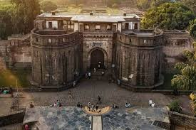
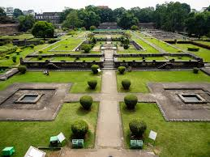

Shaniwar Wada is a historic fortification in the city of Pune, India. Built in 1732, it was the seat of the Peshwas of the Maratha Empire until 1818. The fort has witnessed grand royal ceremonies and tragic events, making it both a cultural and haunted landmark. Though much of it was destroyed by a fire in 1828, the remaining structures and gardens are still a major tourist attraction.
The main gate, known as the 'Delhi Darwaza', is massive and built to withstand elephant attacks. The complex features fountains, courtyards, and walls that whisper tales of history. Shaniwar Wada is famous for its evening light and sound show which beautifully narrates the rise and fall of the Maratha Empire.
⭐⭐⭐⭐Weather: 24 - 30°C
Label:Historical Landmark
Timing:9:00 AM - 5:30 PM
Entry Fee: Indian citizens: INR 25,
Foreigners: INR 300,
Light and sound show: INR 50
|  |  |